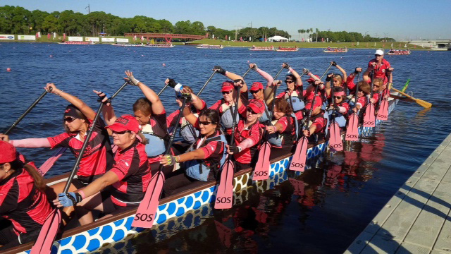
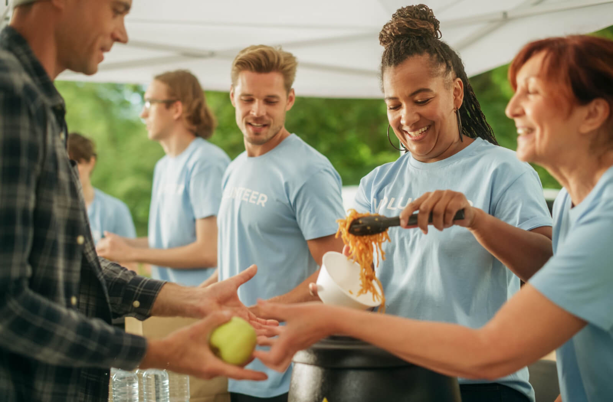
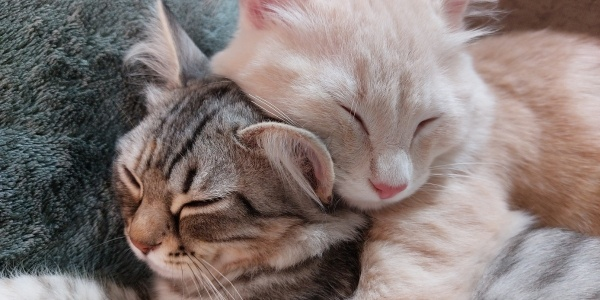

Christine takes part in a dragon boating club. She keeps moral high by showing her support.

Christine dedicates her time to helping communities in need. In her efforts, she provides numerous individuals with essential clothing, hygiene products, and quality-of-life goods.

Christine has two cats: Lemur and Pepper. Even though they might not always get along, they sure are cute.